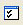
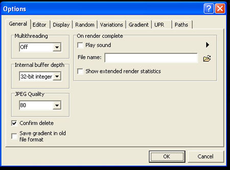
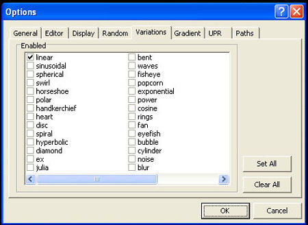
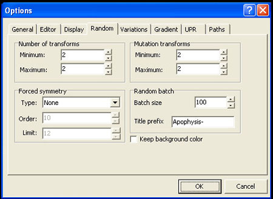
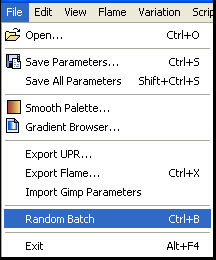

Across the top, you will see several buttons, like those shown above. Click on the one called options. It looks like this. 


Click on the Variations tab, so that the menu looks like the above picture. Click on Clear all. This clears all the check marks.
Now, check Linear.

Click the random tab. The editor should look like the above picture.
Under the number of transforms, change both minimum and maximum to 2.
Now go down to the bottom and click ok.

Now go to file and click Random Batch. You will have 100 randomly generated fractals show up in the fractal list on the left-hand side of your screen